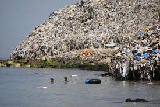

Wall-E is not as fictional as we believe
Wall-E was one of my favorite Disney movies growing up. Although this seems futuristic, scientists are predicting that the earth will look just like Wall-E's in 2157, if we dont change our recycling habits.
Recycling In Tons
In 2013, about 255 million tons of trash was generated just in the US. If this number increases any more than it has, our landfills will overflow and our world will never look the same. Those 255 million tons used to be 88 million tons in 1960. There has been a steady increase of trash produces over the decades. In 1960, 88 million tons of trash was generated, which increased to 166 million tons in 1985. In 2013 however, about 255 million tons of trash was produced.
Facts About Recycling
- Without exception, recycling is the top action society can do to simultaneously improve: the environment, the economy, sustainable manufacturing and to prevent waste from going into oceans.
- Recycling is collapsing in the U.S. due to public confusion about recycling.
- U.S. recycling levels are currently 21.4% (recent EPA funded Yale University Study)
- When U.S. recycling levels reach 75% it will be the environmental and CO2 equivalent of removing 55 million cars from U.S. roads each year.
- When U.S. recycling levels reach 75% it will generate 1.5 million new jobs in the U.S. (net).
- Manufacturers truly want these materials back to reuse in their manufacturing, but they aren't able to reuse the materials if people don't recycle right.
- The nonprofit standardized label mission is the #1 solution to help society begin to recycle right and therefore, help recycling begin to thrive.
- Despite only representing 5% of the world population, the U.S. generates more waste than any other country in the world. (World Watch Institute)
- In less than 15 years, worldwide waste is expected to double. (World Watch Institute)
- According to a recent Yale University/EPA study, the U.S. recycles less than 22% of its discarded materials.